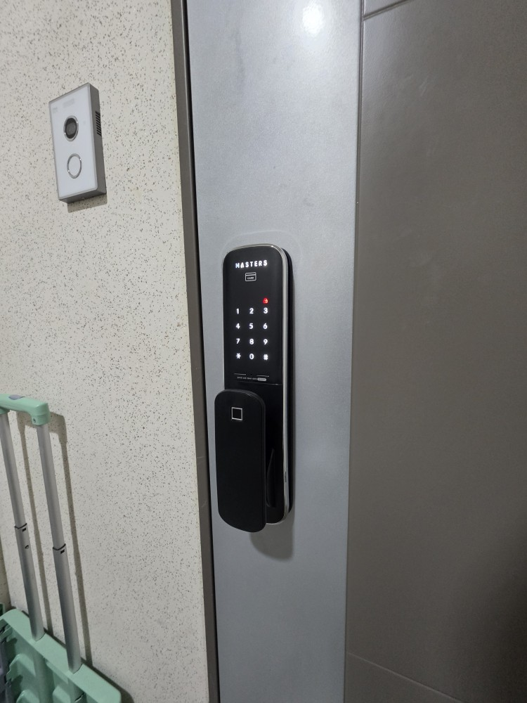

면목동 가야써니빌 구형 비디오폰 교체 및 현관 도어락 무선 문열림 연동 시공



· 현장 증상: 가야써니빌 기존 구형 비디오폰 화면 불량 및 1층 공동현관 로비폰·도어락 문열림 작동 불가
· 작업 내용: 기존 매립함 규격 전용 마감판 시공 후 호환형 신형 비디오폰 교체, 무선 송·수신기 매칭으로 거실 월패드에서 1층 로비폰과 현관 도어락 모두 원격 열림 셋팅 완료
문의: 010-7724-5425 (사진 1장 간편 견적)
동일 시공 견적 신청하기 →